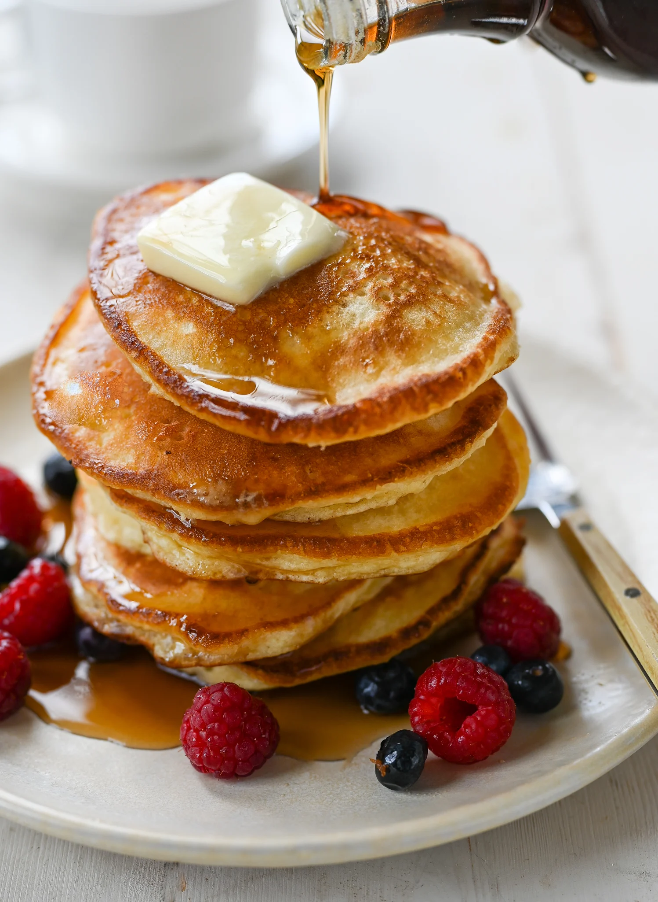

Home
Fluffy Pancakes

Description
These fluffy pancakes are light, airy, and perfect for a delicious
breakfast or brunch. They are easy to make and can be served with your
favorite toppings like maple syrup, fresh fruits, or whipped cream.
Make your mornings special with these homemade pancakes that everyone will
love. Double the recipe for a family feast!
Ingredients
- 1 cup all-purpose flour
- 2 tablespoons sugar
- 2 teaspoons baking powder
- 1/4 teaspoon salt
- 1 cup milk
- 1 large egg
- 2 tablespoons melted butter
- 1 teaspoon vanilla extract
- Butter or oil for cooking
Steps
-
In a bowl, whisk together the flour, sugar, baking powder, and salt.
-
In another bowl, whisk the milk, egg, melted butter, and vanilla
extract.
-
Pour the wet ingredients into the dry ingredients and mix until just
combined. Do not overmix; some lumps are okay.
-
Heat a non-stick skillet or griddle over medium heat and lightly grease
with butter or oil.
-
Pour 1/4 cup of batter for each pancake onto the skillet. Cook until
bubbles form on the surface, then flip and cook until golden brown.
-
Repeat with the remaining batter. Serve warm with your favorite
toppings.